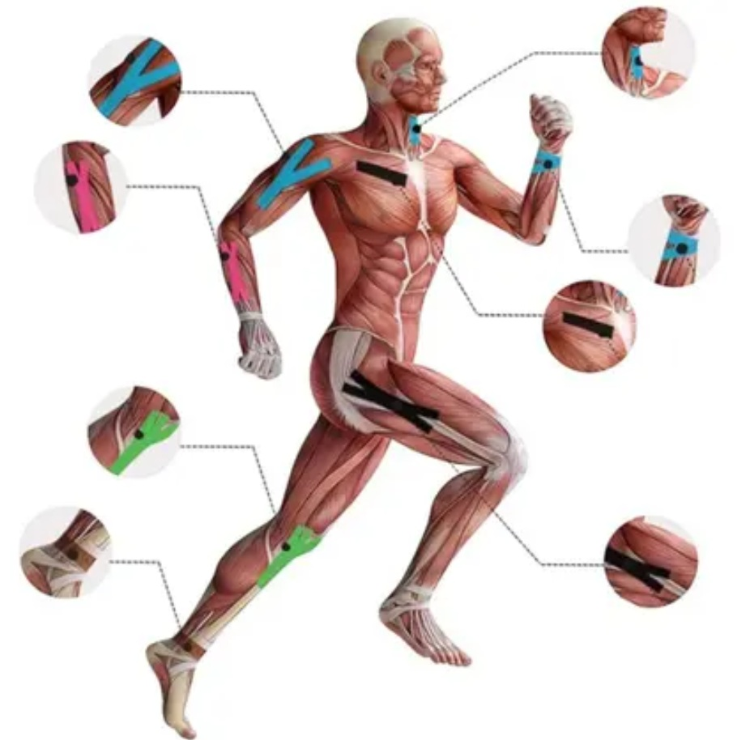

Formulário em coluna única. Clique em Calcular. Simulação apenas para UI/integração.

Score: — / 100
Lesão de Classificação: —
Estimativa de RTP (simulada):
—
Atenção — isso é uma SIMULAÇÃO.
Os resultados (SCORE, BAMIC e RTP) são gerados por um back-end simulado com regras heurísticas para demonstrar integração front-end → JSON → API. Não use como avaliação clínica.